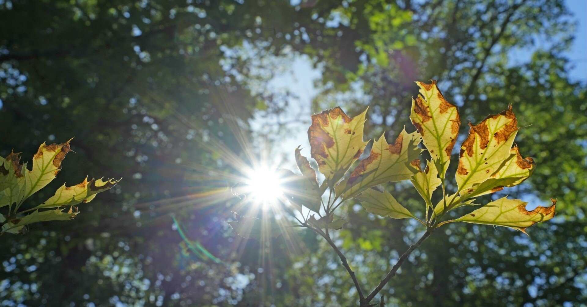

最近は目まぐるしい毎日を過ごしていた。
白紙に向かって自身の気持ちを文字で打ち込む行為も、随分と久しいものになってしまった。
でも、故郷に帰ってきた感覚でここに戻ってくると、「おかえり」と忘れ得ぬ人が言ってくれているような、そんな風にも思える。
数か月前、大切な人との別れを経験した。
こうやって言葉にするには早すぎる気もするけど、日々を過ごすだけで自然に溜まる心の垢を洗い流すには、愚直に言葉にするほかないのかもしれない。だから、今日は言葉にしようと思う。どんなに下手くそでわかりづらい想いでも、それが僕の現在地だから。
0歳から4歳まで父の仕事の都合で海外で暮らしていた。
そして、日本に帰国した頃、初めて家族以外の繋がりを持った人。僕の一番最初の友達で、今でも大切な幼なじみ。
その彼の母親が今年の4月末に旅立った。
ゴールデンウィークが目の前に迫った、ある平日。
いつものように会社に行く準備をしつつ、今日もたんまり残されている仕事をどうやってさばこうかと思案していると、2年ぶりに彼のLINEを受信する。通知欄で中身を確認しようとするが、「画像を送信しました」の文字。
あとで開こうと慌ただしく支度をし、駅までの道を走り、いつもの電車に乗り込む。僕の最寄りは始発駅のため、今日も無事に座席を確保できた。息を整え、スマートフォンを取り出す。
「今まで仲良くしてくれてありがとう。母は色々な付き合いがあったけど、真っ先に海人に伝えるね」
その直後に送られていた画像には訃報と題された書面。彼の母親の氏名と、昨日の日付が記載されている。そこに一切の感情はないのに、それがひどく鋭利でむごい文章に感じて、僕はその画面を閉じることしかできなかった。
彼女はとびきり明るくて、底のしれない優しさを持った人だった。
彼は僕と同じ一人っ子で、彼女からとても愛されていることを幼な心に感じていた。そして彼女は、その一部を僕にも分け与えてくれた。
「海人ちゃん、ウチの子とずっと仲良くしてよ」
そう言われてから、僕は母と一緒に彼の実家に遊びに行くことが増えた。母同士がリビングでお茶をしながら話している間、僕らは座敷で遊ぶ。それが、あの頃の日常の風景だった。
「おかえり。遊びに来てくれたんだね」
同じ小学校に進学してから一人で彼の実家まで遊びに行くたび、彼女はそう言って迎え入れてくれる。当時は恥ずかしくてまともに言葉を返せず、ただ軽い会釈をする程度だったけれど、後々聞いた話ではそんな様子も微笑ましく見てくれていたらしい。
小学校の授業参観や父兄が集まる運動会などにも、控えめな保護者とは真逆な態度で、彼にまっすぐな愛情を注いだ彼女。
ほかのクラスメイトたちからもいじられるくらい、その愛情は目立っていた。すっかり名物母ちゃん化しており、もしかしたら当時の彼にとっては恥ずかしい思いもしたのかもしれない。
優しくて、ストレートに心に語りかけてくる声。その声が、息子である彼の名前を呼ぶ。社会に出る予行演習の場でもある“学校”という集団を、軽やかに飛び越える。その声には、見上げればわかる天気のような素直さで、誰の心にもすっと溶け込む不思議な力があった。
その声は、今も僕の中でこだまする。本心をいえば、彼女にまっすぐに愛される彼のことがはてしなく羨ましかった。誰の前であろうとも、揺らぐことのない愛を注いでくれる存在に。
｢この子のためなら、私はなんだってできるよ｣
そう言う彼女の笑顔が、未だ頭から離れない。
中学、高校、大学は違う場所だったが、幼なじみとしての付き合いはゆるく保たれていた。そして、彼は社会に出ると、長年の夢であった神職に就くため奈良に住居を移した。
｢もういい大人なのに、まだ子ども扱いしてくるんだ｣
｢そんなもんだよ。兄弟のいない子どもの宿命みたいなもんさ｣
そんな話をした記憶がある。あの時は、何気ない会話の一部としか思っていなかった。
彼女が重い病気にかかったのは、彼が東京を離れてまもなくの頃だった。
僕自身このことは後々知ったが、そんな様子は一切顔に出さずに僕と接していた。当時20代前半だった彼と同じことが、今の僕にできるのだろうか。
言葉にしなくても、親にしてみたら僕らはずっと子どものままであることも、本当は知っていた。親の愛をうんざり思えば、大人になっても帰れる場所があるのだと、確かめられたからかもしれない。そして僕らは、そんなような話をこの先もしていくものだと思っていた。
社会の荒波に飲まれて数年が経過した頃。彼の祖母が亡くなったと連絡を受けた2年前の夏。
久しぶりに懐かしい家の座敷に上がる。そこには微笑みを投げかける故人の遺影が掲げられている。僕が中学生の頃は、彼ら親子と彼の祖母、そして僕ら親子の5人で隣町にあるレストランでささやかなクリスマス会をしていた。
仏壇の前で手を合わせていると、奥のリビングから彼女が出てきた。母とは数年前まで定期的にお茶をしていたようだが、僕は中学ぶりの再会だった。
「最近会ってくれないのよ」と母が言っていたことを思い出す。車いす姿で随分と弱った様子だった。思えば、この日が直接言葉を交わした最後の日になってしまった。
「久しぶり。大人になったね。元気だった？」
その時、ちゃんと言葉を返せただろうか。小学生の頃みたいに想いをしまわず、ちゃんと言葉を口にできたのか。
なんとかして思い出そうとしても、どうしても今は、涙で前が見えない。
訃報を受け、結局僕は電車内で感情を抑えることができなかった。
目を腫らした状態で出社すると、上司や同僚に心配される。通勤の40分間、必死に心を落ち着かせようと努力する。でも心に溢れてくるのは、ついこの前のように感じる、明るくて優しい彼女の笑顔だった。
「大丈夫。ずっとあんたのそばにいるから。泣くんじゃないよ」
処置のしようがなく、自宅療養に切り替えたと聞いていたが、最期の瞬間までそうやって彼を励ました。
どうしても仕事の関係で葬儀に出席できず、お悔やみをLINEで伝えることしかできなかったが、僕の両親が出席した葬儀で、喪主を務めた彼がそう言ったらしい。
「立派だったよ、本当に」
いつもお喋りな母は、その一言だけ僕に言った。
ゴールデンウィークの最終日、弔問に訪れた。翌朝には奈良に帰らなければならない彼と直接会えるのは、この日しかなかった。
黒い礼服に袖を通す。まさかこの格好であの家に向かう日が来るとは、こんなにも早く来てしまうとは思ってもいなかった。
懐かしい道を歩き、彼の実家の前に到着すると、20年前の景色がなんら変わらない姿で迎え入れてくれた。ただただ、静かな時間が流れている。
「まあ、いらっしゃい。待ってたよ」と明るい声が出迎えてくれそうな、そんな予感しかしない。
そっとインターフォンを押す。玄関ドアの周りには彼女の趣味だった花々が、今でも綺麗に咲き誇っている。
ゆっくりと扉が開く。彼は一瞬の間の後、微笑んだ。
2年ぶりの再会。お互い32歳になる年。
28年前に無邪気に笑い合っていたあの頃から、随分時間は経った。それが確証のない日々を積み重ね、生きるということでもあった。それはきっと、愛してくれる存在から巣立ち、自分自身の足で歩いていくということでもあるのだと思う。
「忙しい時間を縫って来てくれてありがとう。上がって」
僕は深く頭を下げる。そして、頭を上げた先に待っていたのは、彼女の愛をまっすぐに受け取る、純粋な瞳。
その瞬間、5月の爽やかな緑風が僕らの間に吹いた。
「おかえり。来てくれたんだね」
目の前にいない彼女の声が、頬をなでていく。その声色は、明るくて優しさに溢れた、紛れもない彼女の声。
「当たり前じゃないですか」
一番最初に出てきたのは、そんな強がった言葉。
「遅くなってごめんなさい」
今度こそちゃんと言葉にしなくちゃと思い至る。たくさんの、数えきれない感謝を。
「今まで本当にありがとうございました」
これからも彼と僕を見守っていてください。再会をはたしたばかりなのに、とめどなく言葉が溢れる。
あの頃と同じだけの愛情を、この先も彼に。そして、今こそ言わなくちゃならない。彼女がくれた愛に少しでもお返しをするのが、今の僕ができる唯一のことだ。
「ただいま」
2人に微笑むように、心のうちでそう言った。
20年越しの言葉が、彼女のもとまで届けと願って、僕はあの頃と同じ想い出の中に足を踏み入れた。